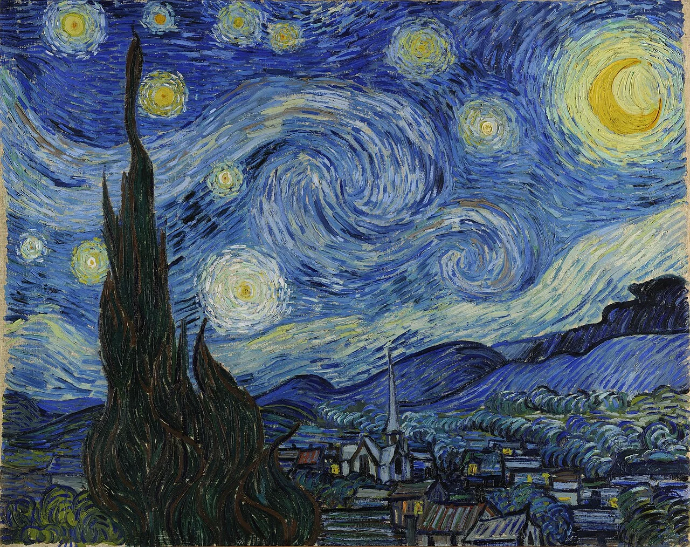
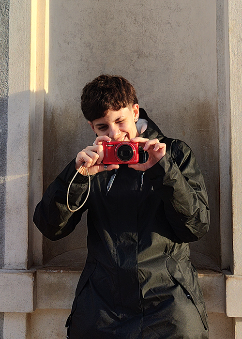
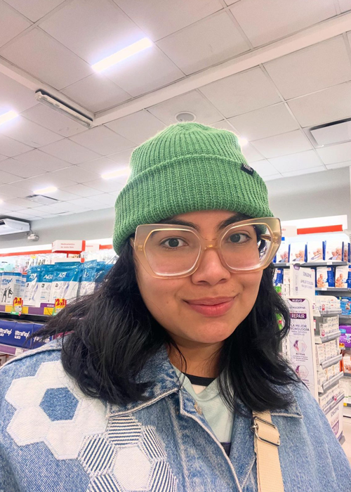

Estudio de Diseño Multimedial

Deconstrucción Interactiva: Tomando como punto de partida "La noche estrellada" de Van Gogh, esta pieza reinterpreta la obra a través de primitivas 2D. El cielo se construye con una estética cubista, utilizando bloques rectangulares que mutan en color. La icónica silueta oscura de la obra original se resignifica aquí como el Obelisco, situándonos en la Ciudad de Buenos Aires bajo nubes translúcidas en un loop constante. Finalmente, la obra invita al espectador a ser coautor: al interactuar con el lienzo, el usuario puede estampar infinitas estrellas formadas por anillos expansivos, eligiendo la composición final de su propio cielo porteño.

